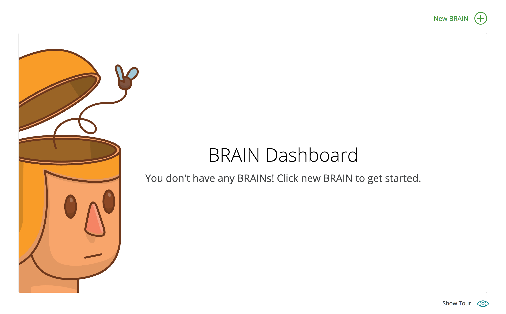
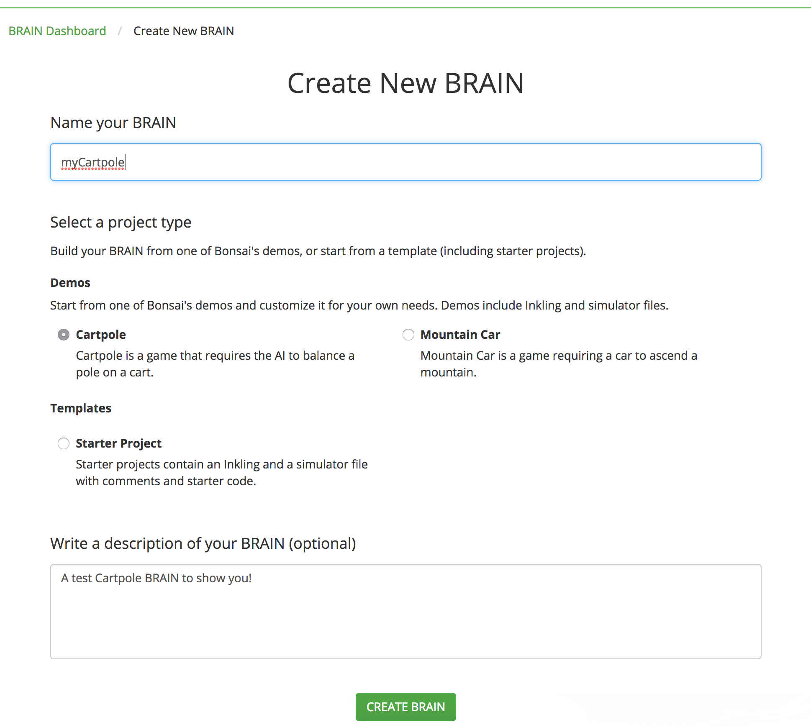
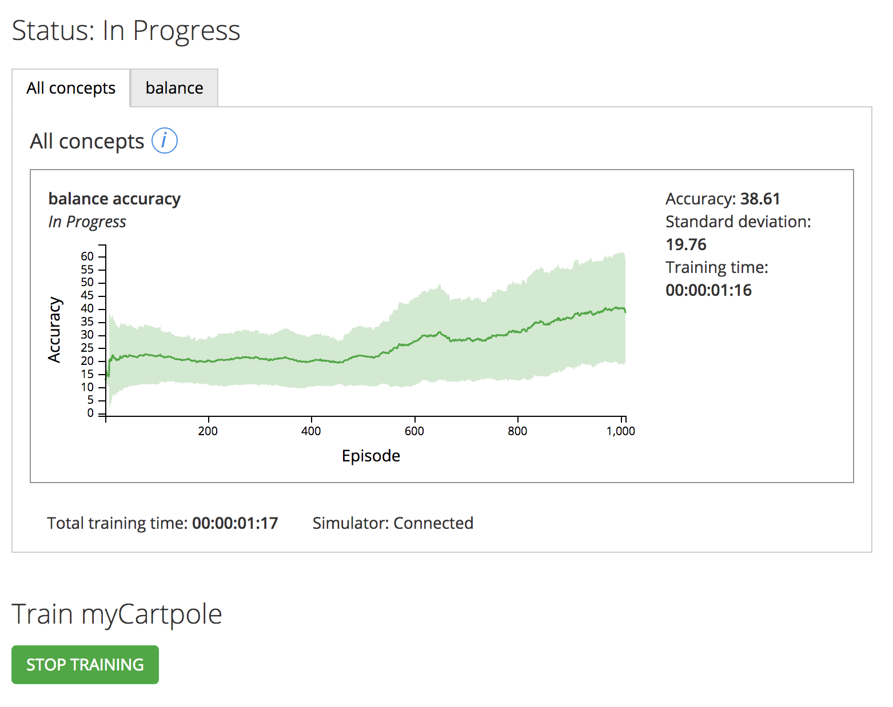
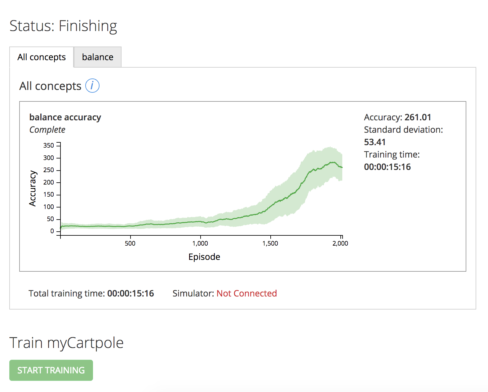

Overview
Hello new Bonsai developer!
There are some things you might want to know before you get started. In this section, we’re going to walk you through the components and fundamental ideas of the Bonsai Platform. Read through the Quick Start guide to learn how to get set up with Bonsai’s platform and what you can do with it.
If you’re the type of developer who wants to dive right in and see the Bonsai Platform working, however, skip down to Create Your BRAIN below. We’ll guide you through setting up your first BRAIN with the Cartpole template, how to get that BRAIN training, and then explain what to do with it!
If you’d prefer not to use our web interface, instead follow Run the Platform Locally for a similar guide to this one on your local computer.
The Bonsai Platform

Build
- Bonsai Command Line Interface (CLI): is a command line tool that enables you to configure and control the Bonsai Artificial Intelligence (AI) Engine. This is an alternative to using the Web Interface and is not covered in this guide. See how to Run the Platform Locally if you prefer CLI development.
- Web Interface: is the browser-based tool found at beta.bons.ai for creating and analyzing BRAINs stored in the Bonsai AI Engine. You can also visualize the BRAIN’s training on this page. This is what we will use for this Quick Start guide because you can get up and running on the Bonsai Platform in just a few clicks!
- Simulators: are often a complex interactive virtual environment. For this project, you’ll be using a simple simulator from OpenAI. Simulators usually have state, which is a representation of the world inside the virtual environment and receive actions which change that state.
Teach
- Inkling: our special purpose programming language for machine teaching. It expresses the solution to a problem in terms of how you teach the computer to find the solution as opposed to how to calculate the solution. This means that you, the developer, can leverage your domain-specific expertise about the problem space and leverage our expertise about machine learning. To learn more about Inkling, refer to our Inkling Guide.
- Bonsai Artificial Intelligence (AI) Engine: abstracts away and automates the low-level mechanics of artificial intelligence. Each Inkling program developed is fed into the Bonsai AI Engine in order to generate and train appropriate models (referred to as BRAINs).
Use
- SDK/Library: can be used after your BRAIN is created and trained. Use with your own application by connecting it to the API generated by the AI Engine using the Bonsai library.
- APIs: enables AI creators and AI users to interact with the Bonsai AI Engine. To learn more about our APIs, refer to our API Reference.
Ultimately, our platform enables you to build AI agents that work (or play) for you without a deep knowledge of machine learning.
What are BRAINs?
A BRAIN, Basic Recurrent Artificial Intelligence Network, is an individual AI agent, and it is programmed to learn using Inkling. Each BRAIN lives in the Bonsai Artificial Intelligence (AI) Engine which manages and automates much of the lower level complexities of working with artificial intelligence.
The Bonsai AI Engine contains a vast array of machine learning algorithms, manages data streaming and data storage, and provides the efficient allocation of hardware resources. It is built with an infrastructure that supports streaming data efficiently through the system, and it uses a set of heuristics to make choices about which learning algorithms to use to train each BRAIN. The set of heuristics also make it possible for it to choose from any number of possible algorithms, topologies, etc., train all of them in parallel, and pick the best result.
For example, if the BRAIN Server picked Deep Q-Learning, which is a machine learning algorithm, then the system also picks the appropriate topology, hyper-parameters, and initial weight values.
The Bonsai AI Engine also determines when to train each concept, how much (or little) to train each concept based on its relevance, and, ultimately, produces a trained BRAIN. Furthermore, it does something we call meta-learning. Meta-learning means that the system keeps a kind of memory or record about each program it’s seen, the data it used for training, and the generated AIs that it’s made. It also records how fast those AIs trained and how accurate they became. The BRAIN server is continuously learning and improving over that dataset.
Read more about how the Bonsai AI Engine works in our AI Engine Guide.
What is a simulator?
A simulator imitates a real-world situation in a virtual environment, which enables a user to model and test situations that would often, otherwise be very complicated to set up and test. Your simulator could be a game, such as Cartpole, or an emulation of a real-world process, such as a self-driving car. Training with simulators is especially useful for optimization, or for use with complex control problems that can be modeled in a simulator.
Training means teaching a BRAIN to reach a specific outcome in the simulator. The training involves using a specific set of concepts, a curriculum, and lessons, which are described in the Inkling file.
Today, we only support simulators written in python. To learn more about connecting your own simulator, refer to our Library Reference.
Create Your BRAIN
Open AI’s Cartpole Gym

Before you begin, you will need to have access to the Bonsai Platform preview. If you don’t have access yet, request access at bons.ai.
In this guide, we’ll walk you through creating a BRAIN to train the OpenAI Gym environment for Cartpole, a simple balance control problem. The walkthrough of the Inkling code and simulator interface can be found in our Examples and the full source code for you to take a look at is on Bonsai’s GitHub.
If you’d prefer not to use our web interface, instead follow Run the Platform Locally for a similar guide to this one on your local computer.
BRAIN Dashboard


The dashboard has a New BRAIN button as pictured. Click on it to create a BRAIN.
Create New BRAIN
Select ‘Cartpole’ from the set of BRAIN templates. The Cartpole simulation can be managed on Bonsai’s servers, so you don’t need to run anything locally on your computer to train this simulation. At this time, you will also be asked to give your BRAIN a name and a description.
Click on the “Create” button which will take you to the BRAIN Details page.
BRAIN Details
BRAIN Graph

BRAIN Training Graph
Do not be afraid! You don’t have data yet because you haven’t trained your new BRAIN! That’s the next step. This graph will display each of your concepts to be trained (if you look in the Inkling code you’ll see that Cartpole only has one).
Code Editor Window

Code Editor Window
The code editor shows you all of the files that are contained within your project and the contents of each file if you click on them on the left.
Your code will automatically compile (if it’s Inkling) and save every few seconds while you are editing. You never need to edit code in the browser if you don’t want to. Check out our CLI Install Guide to install the Bonsai CLI locally, download these files, and run the rest of this guide locally if you want.
Train Your BRAIN


When you’re done checking out the code editor and ready to start training this BRAIN on the Cartpole simulator, simply click the Start Training button below the graph.
What this is going to do is spin up a container for the AI Engine, connect up to the
cartpole_simulator.py file, and start the BRAIN training. All with one button!
Training Cartpole for ~2,000 episodes is ideal, and might take between 15-30 minutes depending on how well your BRAIN is performing. You can see in the images that it only took about a minute for the first ~1,000 episodes but the second half took 14 minutes. Your graphs will vary because the training takes random actions, so don’t worry if they don’t look like these.
The server will automatically end training once the BRAIN reaches past a certain accuracy, but you will most likely want to stop training before it gets there because there will be diminishing returns for training past about 2,000 episodes. You can play around with training for 15 mins, 30 mins, or even 1 hour and use your BRAIN to see how well it plays each time!
Use Your BRAIN
Congratulations on training your first BRAIN! “What do I do with it now?” you may ask.
To use the BRAIN you’ve just trained you’ll need to locally run the python simulator for OpenAI Gym. If this was your own simulation you had written, this would be the part where you hook it up to your application and get predictions of your own!
If you decide to skip this setup or have trouble installing the Bonsai CLI you can get the satisfaction of seeing what the simulation would look like by watching this pole balance on the cart in gif form.
Install Bonsai CLI
Install Bonsai CLI
pip install bonsai-cli
# If you're running python3 on macOS:
pip3 install bonsai-cli
The Bonsai Command Line Interface (CLI) is a command line tool that enables you to configure the Bonsai AI Engine. The CLI is especially useful for automation and connection to other tools. Currently, there are some actions that can only be performed using the CLI, such as getting predictions.
If you already have python installed you should be able to run the python package manager pip
to install the Bonsai CLI. Otherwise, check out the CLI Guide Install Prerequisites section
to get everything installed and then come back here.
Run Prediction
Download Project Files
bonsai download myCartpole
cd myCartpole
Install Simulator’s Requirements
pip install -r requirements.txt
# If you're running python3 on macOS:
pip3 install -r requirements.txt
The cartpole_simulator.py simulator file that you need to run is one of the project files the
server created when you made your BRAIN. You can download these project files locally with the
download command, and then cd into that folder to look around.
You’ll also want to run the requirements.txt file which contains all of the packages your simulator needs to run. This pip command will make sure all of them are installed, and if not, install them for you.
Use Your BRAIN
python cartpole_simulator.py --predict-brain=myCartpole --predict-version=latest
# If you're running python3 on macOS:
python3 cartpole_simulator.py --predict-brain=myCartpole --predict-version=latest
It’s finally time to run the simulator using predictions from your BRAIN! How well it does depends
on how long you let it train. Using your BRAIN involves calling Python on the project’s simulator
file, in predict mode, and --predict-version=latest will use the latest training session that you just ran.
Next Steps
Now that you’ve completed this guide, you can:
Check out our Inkling Guide.
It contains all of the concepts and components of our unique programming language. You’ll learn:
- How to assess a simulation and write an Inkling file to teach a BRAIN.
- The core concepts behind the Inkling language.
- The components of the Inkling language.
And we have these other resources that will enable you to maximize your AI development experience: